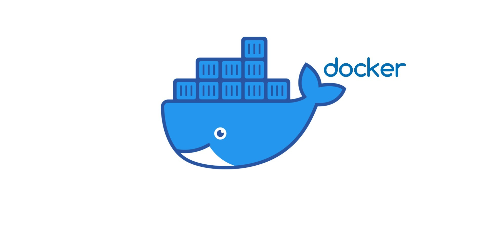

Apa itu Docker
Docker adalah platform open-source yang digunakan untuk mengembangkan, mengirimkan, dan menjalankan aplikasi di dalam sebuah container. Container adalah lingkungan terisolasi yang berisi semua komponen yang dibutuhkan aplikasi untuk berjalan, seperti kode, dependensi, library, dan konfigurasi. Dengan Docker, aplikasi bisa dijalankan di mana saja tanpa perlu khawatir tentang perbedaan sistem operasi atau lingkungan server.
Mengapa Docker
Docker menjadi populer karena mampu menyederhanakan proses deployment aplikasi. Beberapa alasan utama menggunakan Docker:
- Konsistensi: Aplikasi berjalan sama persis di berbagai lingkungan.
- Ringan: Container berbagi kernel sistem operasi, sehingga lebih ringan dibandingkan virtual machine.
- Portabilitas: Docker image bisa dijalankan di berbagai platform yang mendukung Docker.
- Skalabilitas: Memudahkan proses pengelolaan skala aplikasi menggunakan orchestrator seperti Kubernetes.
Sejarah Docker
Docker pertama kali dikembangkan oleh perusahaan dotCloud pada tahun 2013. Proyek ini awalnya adalah bagian internal perusahaan untuk mengatasi masalah deployment. Setelah melihat potensinya, Docker kemudian dirilis sebagai proyek open-source. Popularitasnya terus meningkat, dan pada akhirnya dotCloud berubah nama menjadi Docker Inc. untuk lebih fokus pada pengembangan Docker.
Arsitektur Docker
Arsitektur Docker terdiri dari beberapa komponen utama:
- Docker Engine: Komponen inti yang berjalan di host dan mengelola container.
- Docker Daemon (dockerd): Layanan yang berjalan di latar belakang dan bertugas mengatur container.
- Docker CLI: Command Line Interface untuk berinteraksi dengan Docker Daemon.
- Docker Image: Blueprint atau cetakan untuk membuat container.
- Docker Container: Unit yang menjalankan aplikasi berdasarkan image.
- Docker Hub: Repositori online untuk menyimpan dan berbagi Docker image.
Kelebihan dan Kekurangan Docker
Seperti teknologi lainnya, Docker memiliki kelebihan dan kekurangan:
Kelebihan:
- Portabilitas: Aplikasi dapat dijalankan di berbagai platform tanpa konfigurasi ulang.
- Efisiensi: Menggunakan resource lebih ringan dibandingkan virtual machine.
- Kemudahan deployment: Deployment aplikasi jadi lebih cepat dan konsisten.
- Versi aplikasi terkontrol: Dengan Docker image, versi aplikasi dan dependensi dapat diatur dengan mudah.
Kekurangan:
- Kompleksitas jaringan: Konfigurasi jaringan antar container bisa menjadi rumit dalam skala besar.
- Keamanan: Karena berbagi kernel, ada potensi risiko keamanan jika tidak dikelola dengan baik.
- Storage management: Pengelolaan storage untuk container bisa menjadi tantangan.
Kesimpulan
Docker adalah solusi modern yang sangat membantu dalam proses pengembangan, distribusi, dan deployment aplikasi. Dengan konsep container, Docker menawarkan konsistensi, efisiensi, dan portabilitas yang tinggi di berbagai lingkungan. Meskipun memiliki beberapa kekurangan seperti kompleksitas jaringan dan potensi isu keamanan, kelebihannya jauh lebih menonjol terutama untuk proyek-proyek berskala kecil hingga besar. Memahami arsitektur, sejarah, serta kelebihan dan kekurangannya akan sangat bermanfaat bagi siapa saja yang ingin masuk ke dunia DevOps dan cloud-native applications.